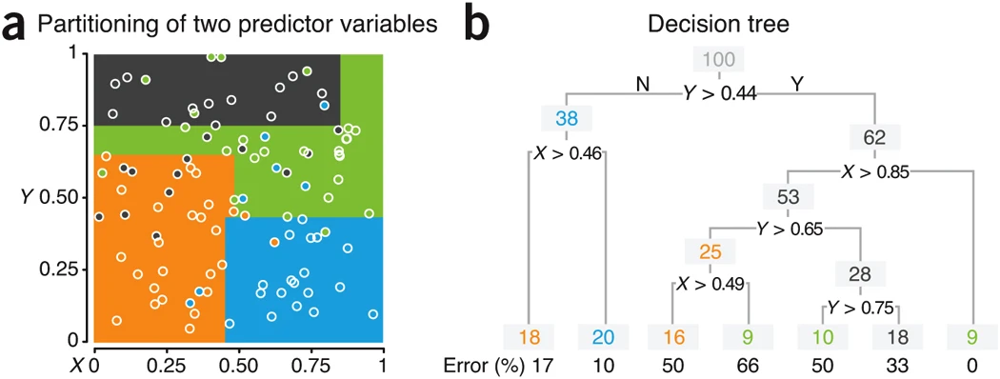
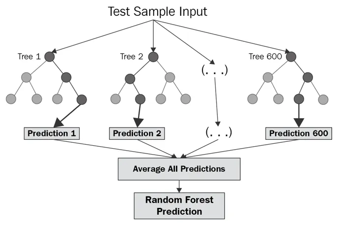
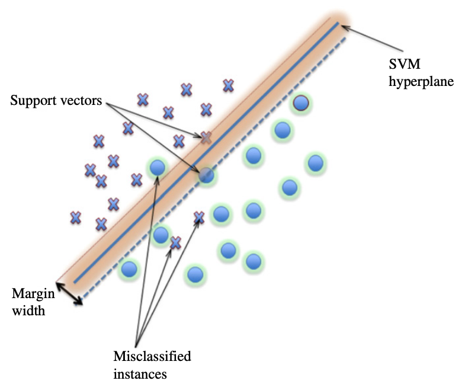
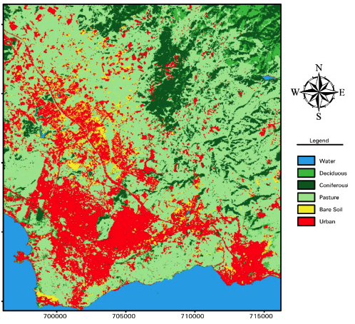
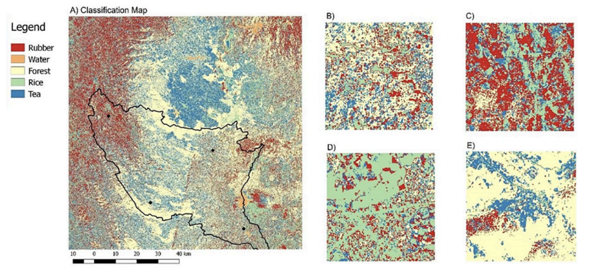

6 Classification I
7 Classification I
7.1 1. Overview
This week we studied how to use Machine Learning (ML) to classify Earth Observation data. I found this to be the most interesting and useful topic in this module as it cemented how to think about pixels in satellite imagery. This week’s readings, particularly Introductory digital image processing: a remote sensing perspective (Jensen, J.R., 2015) describe classification as on of the essential skills in remote sensing.
After completing this week’s practical, I understood how transformative GEE has been to the field of remote sensing. While the speed of processing is far quicker - the level of integration and functionality built into GEE enables users to conducts more broad and and comprehensive analysis.
We focused on land cover classification, particularly training classification models, as well as evaluating how accurate the model was in correctly classifying pixels. Four main classification methods were discussed this week:
- Classification and Regression Trees (CART): CART is a straightforward method that splits data into smaller groups to make everything more similar within each group. It is ideal for its simplicity. CART can handle both categorical and continuous data. However, it is susceptible to overfitting.
Source: Krzywinski & Altman, 2017
- RandomForest: This method uses several decision trees to make better predictions and be more reliable. By randomly selecting features, RandomForest can handle categorical data, mitigating overfitting risks inherent in CART. It’s good at working with both straightforward and more complex data by combining many simple models.

Source: Corporate Finance Institute, 2021
NaiveBayes: This approach uses Bayes’ theorem and treats each feature in the data as independent from the others. It’s surprisingly good and quick at making predictions, especially with data that can be neatly categorised. While it’s really meant for categorical data, it can also work with continuous data if you assume the data fits a certain pattern.
SVM (Support Vector Machines): SVM looks for the best boundary that separates different categories in the data. It’s particularly good for dealing with complex problems where the data has many dimensions. Although it is computationally expensive, its ability to manage detailed and continuous data makes it powerful for identifying patterns that are hard to spot.

Source: G. Mountrakis , 2011
7.1.0.1 Training and Testing Data:
When developing classification model, you must train the model, which helps the model learn the link between features and their categories. Testing is used to check how well the model predicts new, unseen data, helping to make sure it works well in different situations and doesn’t just repeat what it has seen before. Distinct training and testing data ensure a model can accurately predict new, unseen data, preventing it from merely memorising the data it was trained on and thus reducing the risk of overfitting.
We looked at two ways of classifying data in GEE:
Using a RandomForest Classifier: This straightforward method applies the RandomForest classifier directly to the training data to categorise the image. It’s a solid technique that benefits from RandomForest’s ability to combine multiple models, which helps reduce errors and overfitting.
Pixel-Based Approach: This more detailed method prepares training and testing data for each individual pixel, leading to a more accurate identification of different land types. This allows for better training and testing, improving the model’s accuracy in classifying land cover.
Accuracy Assessment:
The pixel-based method proved its worth with a thorough accuracy check. By carefully dividing the data into training and testing sets for each pixel, this approach allowed for a precise evaluation of the model’s success. The results showed this method was particularly effective at handling the complexities of classifying different land types, suggesting it can produce highly dependable and widely applicable outcomes.
This dive into classification methods and how to check their accuracy has been both challenging and revealing. The deep understanding of various classifiers and the essential role of thorough testing are key for using GEE in environmental studies. This exploration not only highlights GEE’s strong features but also the detailed work needed to achieve accurate classification results.2. Applications
7.2 2. Applications
The applications of classification in Earth Observation are vast. These methods offer a powerful way to categorise and understand the world around us. Below, I have included a couple examples of classification in Earth Observation data that I found interesting.
7.2.1 Land Cover Classification - Gebze, Turkey
The Applications of classification are vast. I think this is why I was quite awe struck by this week’s lecture. I’ve chosen a case study published in 2009 by Kavzoglu & Colkesen, which classifies Landsat imagery by Landcover. While the study is simplistic in comparison to contemporary studies, I think it does an excellent job illustrating how classification works:

Source: Kavzoglu & Colkesen, 2009
In the article, SVMs are utilised for land cover classification using Landsat ETM+ and Terra ASTER images of Gebze, Turkey. The effectiveness of SVMs was analysed. The study finds that SVMs outperformed the maximum likelihood classifier in terms of overall accuracy and individual class accuracies, demonstrating the robustness and effectiveness of SVMs in classifying remotely sensed images for land cover analysis.
Comparing MLC with SVMs is useful because while MLC (I understand this to be a more traditional and computationally intensive process) relies on statistical assumptions about data distribution, SVMs use a different approach finding a hyperplane that best separates different classes in the feature space
7.2.2 Predicting Snake Bites - Ratnapura, Sri Lanka
This is likely one of the most interesting and unique articles I have read in my academic career. “…by incorporating detailed datasets on snake species, farmer behaviors and climatic factors, this study examines the spatio-temporal dynamics of snakebite risks”. While the article is mostly about agent-based modelling, there are several ingenious uses of SVM in satellite imagery. The example below is one of the inputs they use for their model. They found that certain species of snakes take refuge in certain species of trees. As such, they used satellite imagery to identify the distribution of different species of trees in their region of study.

Source: Goldstein et al., 2021
7.3 3. Reflections
This was the first week I felt like I could conduct some coherent and interesting research.